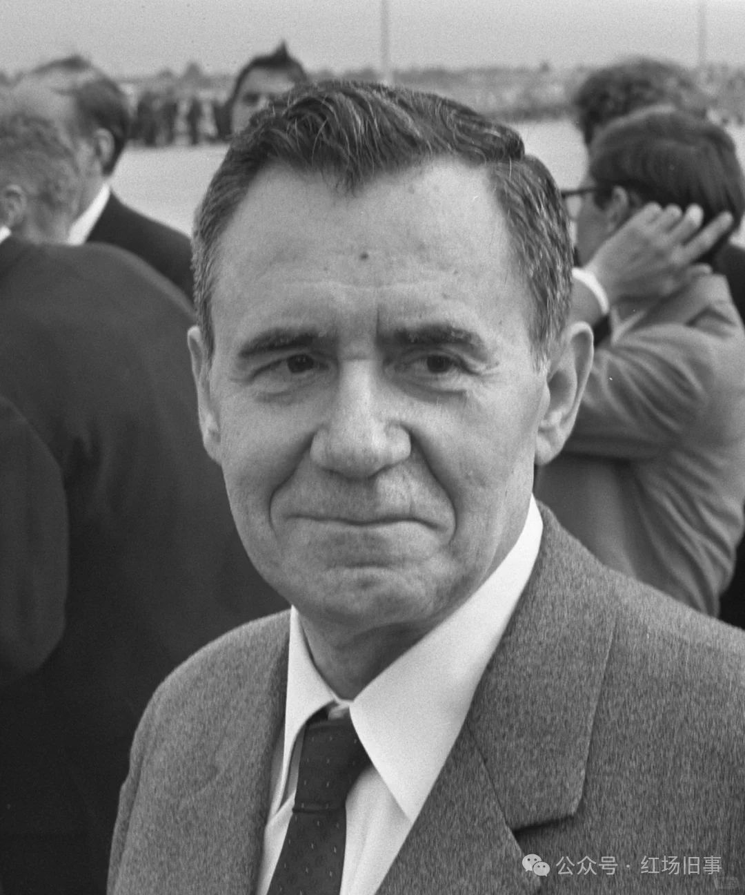
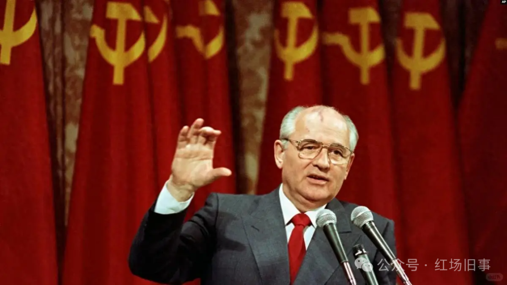
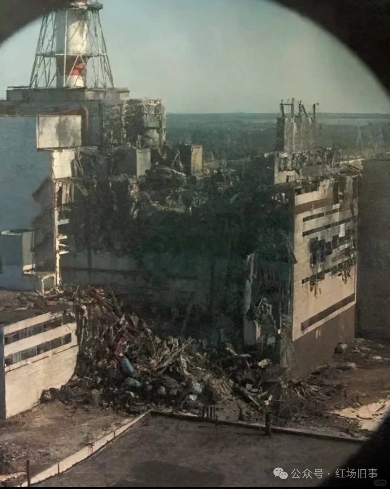
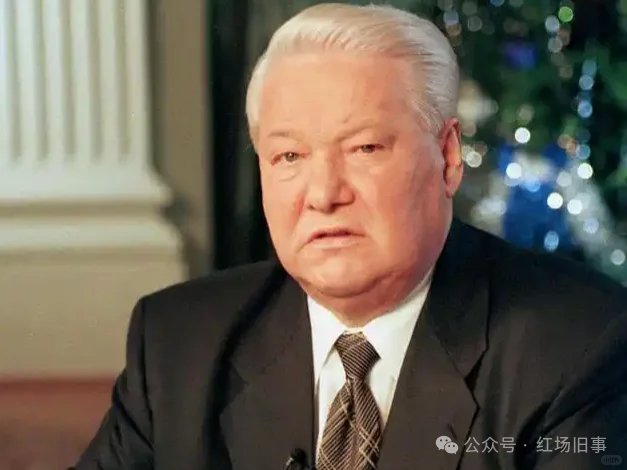

从“拯救社会主义”到“葬送社会主义”：一个理想主义者的悲剧
文字与图片版权归各自权利人所有。 查看公众号原文 ↗
1985年3月11日，莫斯科契尔年科的葬礼刚结束，政治局委员们回到克里姆林宫。三年之内，他们送走了第三位总书记。勃列日涅夫、安德罗波夫、契尔年科——三个老人，加起来执政不到五年。现在必须选出一个新领导人。

伟大的苏联外交官-葛罗米柯名单上有两人：葛罗米柯，76岁，外交部长；戈尔巴乔夫，54岁，最年轻的政治局委员。葛罗米柯站了起来：“同志们，我提议选举米哈伊尔·戈尔巴乔夫为总书记。”会议室静了几秒，然后响起掌声。54岁的戈尔巴乔夫，成为苏联历史上最年轻的最高领导人。

戈尔巴乔夫他走上讲台，说要改革，要新思维，要让苏联重新焕发生机。在场的老人不知道，这个温和的年轻人，将在未来六年里亲手打开一扇再也关不上的门。
一、新思维：重新定义“社会主义”戈尔巴乔夫上台后做的第一件事，是重新思考“什么是社会主义”。在勃列日涅夫时代，社会主义就是口号：发达社会主义、战无不胜的意识形态。没人真的信，但没人敢说不信。戈尔巴乔夫在1985年苏共中央全会上说：“我们不能继续用过去的办法解决问题。我们需要新思维。”“新思维”的核心是：社会主义不是僵化教条，而是可以改革的活生生的制度。他提出三个关键词：公开性、改革、民主化。公开性：让人民知道真相，让媒体可以批评改革：在经济领域引入市场机制，给企业自主权民主化：在政治领域扩大参与，实行差额选举这三件事，任何一件放在苏联都是石破天惊。戈尔巴乔夫要同时做三件。1986年2月，苏共二十七大通过改革纲领。戈尔巴乔夫强调：“改革不是修修补补，而是革命性的变革。”台下掌声雷动。没人意识到，这场“革命”将超出所有人的预料。
二、公开性：打开潘多拉魔盒公开性最初目标是反腐败、反官僚、反造假。1986年，苏联媒体开始刊登过去不敢登的东西：官员贪污报道、工厂造假调查、商店空货架照片。老百姓觉得新鲜：原来报纸可以骂领导？原来那些年被掩盖的灾难可以拿出来说？但公开性很快失控。

切尔诺贝利核事故1986年4月，切尔诺贝利核事故爆发。苏联最初封锁消息，但瑞典监测到辐射，全世界都知道了。戈尔巴乔夫被迫公开承认，允许媒体报道。这是苏联历史上第一次官方允许媒体如实报道灾难。此后，媒体开始挖掘更敏感的话题：阿富汗战争真相、历史冤案细节、少数民族委屈。1987年，甚至有人公开讨论“要不要保留列宁墓”。戈尔巴乔夫后来回忆：“我们以为公开性是可控的，就像打开一扇窗户透气。但我们忘了，窗户一旦打开，进来的不只是新鲜空气。”
三、改革：市场与计划的拔河在经济领域，戈尔巴乔夫想保留计划经济框架，同时引入市场机制。1987年《国营企业法》赋予企业自主权：可自定部分产量、自销部分产品、自留部分利润。1988年《合作社法》允许私人经营小型企业——这是新经济政策后，苏联第一次承认“个体户”合法。但改革遇到三个死结。第一，价格不改，市场是假的。企业可自销产品，但原材料和产品价格仍是国家定的。有自主权，无定价权，左右为难。第二，财政不改，有钱没处花。自留利润可发奖金，但想买设备？物资是国家分配的。有钱买不到东西，钱变奖金，奖金变通胀。第三，官僚不配合。中央部委不放权，地方官员阳奉阴违。戈尔巴乔夫承认：“改革最大阻力，来自习惯了过去的人。”1988年，经济开始恶化。预算赤字飙升，商品短缺加剧。老百姓发现：报纸上骂领导的话越来越多，货架上的东西越来越少。
四、致命误判：政治为何先于经济？戈尔巴乔夫面临选择：继续推进经济改革，忍受阵痛；还是加快政治改革，为经济扫清障碍？他选择了后者。1988年6月，苏共第十九次代表会议。戈尔巴乔夫提出：政治体制改革是“改革的决定性环节”。他主张恢复苏维埃权力，实行差额选举，限制官员兼职，把权力从党向国家转移。他的逻辑：经济改革推不动，是官僚在阻挠。要打破阻力，必须先改革政治，让人民通过选举把改革派送进权力机关。但这个逻辑有致命漏洞：政治改革一旦启动，就会释放出改革者控制不了的力量。1989年，苏联举行历史上第一次差额选举。许多地区，共产党候选人落选，激进派、民族主义者当选。他们进入最高苏维埃后，不断提出更激进要求：取消宪法第六条、承认多党制、允许加盟共和国独立。与此同时，经济继续恶化。1989年增长率降至1.5%，1990年出现负增长。1990年初，莫斯科开始实行面包配给制——卫国战争结束后第一次。戈尔巴乔夫进退失据：放开政治，局面失控；收回政治，改革倒退。他选择继续走，却不知道前面是悬崖。
五、最初的理想，最后的结局戈尔巴乔夫始终相信，他是在“拯救社会主义”。1987年，他出版《改革与新思维》，在全世界成为畅销书。西方领导人把他当偶像，知识分子为他欢呼。但老百姓在乎的不是理想，而是现实。1989年，大多数人支持改革，但只有不到三分之一认为生活变好了。1990年，这个数字降到十分之一。1990年3月，立陶宛宣布独立。1991年1月，苏军坦克开进维尔纽斯镇压，死伤数十人。戈尔巴乔夫事先不知情，事后无法控制。改革者变成了旁观者。1991年6月，叶利钦当选俄罗斯总统，宣布俄罗斯主权高于苏联法律。从这一刻起，苏联命运已经注定。

叶利钦 8月，保守派政变失败后，权力转移到叶利钦手里。12月25日，戈尔巴乔夫签署辞职声明，克里姆林宫红旗悄然降下。

1991年12月25日19时38分 红旗落地 苏联解体
那个1985年春天上台的年轻人，用六年时间完成了自己的理想——也完成了帝国的葬礼。
结语：戈尔巴乔夫的遗产戈尔巴乔夫是一个理想主义者。他真心相信社会主义可以改革，真心相信公开性和民主化能让国家更好。但他的理想有三个致命误判：第一，以为政治改革可以渐进控制，却忘了政治一旦放开就有自己的逻辑；第二，以为经济改革可以慢慢推进，却忘了短缺经济下的人民没有耐心；第三，以为苏联人民会选择改革，却忘了人民已在排队中耗尽了信仰。最中肯的评价或许来自他自己：“我的错误是，以为可以用旧体制的工具改造旧体制。但我错了。旧体制会用它的方式，改造任何试图改造它的人。”1985年，他54岁，意气风发，想拯救社会主义。1991年，他60岁，黯然辞职，看着红旗落下。他赢了诺贝尔奖，却输了国家。